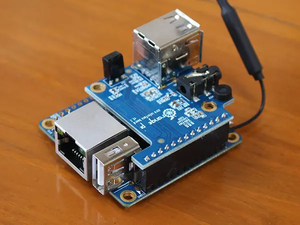

Squeezelite
Для работы мультирума в системе умного дома я использую Logitech Media Server (LMS) и клиентов на Orange Pi Zero + Interface Board с миниджеком. Это решение имеет низкую стоимость и достаточную производительность, а также без проблем работает в WiFi сетях как 2.4GHz, так и 5GHz.
{kind=link}
Настройка
Первое что делаем - идем и скачиваем свежий Armbian на сайте armbian.com и устанавливаем ОС на плату.
Теперь устанавливаем необходимые пакеты: apt-get install squeezelite
Для того чтобы система увидела звуковую карту запускаем armbian-config и ставим галочку напротив ‘System > Hardware > analog-codec’.
Перезагружаем систему: shutdown -r now
Запускаем alsamixer и поднимаем громкость до 95% для DAC.
Редактируем файл ‘/etc/default/squeezelite’ и вставляем в него следующее содержимое:
# Defaults for squeezelite initscript sourced by /etc/init.d/squeezelite
# installed at /etc/default/squeezelite by the maintainer scripts
# The name for the squeezelite player:
# SL_NAME="$(hostname -s)"
SL_NAME="my_player"
# ALSA output device:
SL_SOUNDCARD="hw:CARD=Codec,DEV=0"
# Squeezebox server (Logitech Media Server):
# Uncomment the next line if you want to point squeezelite at the IP address of
# your squeezebox server. This is usually unnecessary as the server is
# automatically discovered.
SB_SERVER_IP="192.168.1.11"
# Additional options to pass to squeezelite:
# Please do not include -z to make squeezelite daemonise itself.
SB_EXTRA_ARGS="-a 80:40::0 -m 12:42:8e:10:6e:90"
Перезапускаем Squeezelite: service squeezelite restart и проверяем что процесс успешно работает ps -ef | grep squeezelite. Если нет, то скорее всего неверно указано устройство вывода, посмотреть список можно командой squeezelite -l.
Если все работает корректно, то в LMS вы увидите нового клиента и сможете проигрывать на нем звук.
Дополнительно
Температуру платы мы будем снимать при помощи сенсора на плате и отправлять через mqtt в Home Assistant, где выведем ее в любом нужном месте.
Для этого устанавливаем дополнительные пакеты: apt-get install lm-sensors jq mosquitto-clients
После того как установка завершена, запускаем sensors-detect для того чтобы все сенсоры определились (нам нужно смотреть температуру CPU).
Теперь напишем скрипт, задача которого будет проста - получать и преобразовывать вывод команды ‘sensors’, округлять полученное значение до целого числа и отправлять на сервер mqtt в определенный топик. После чего эти данные можно выводить в HA при помощи соответствующего сенсора.
#!/bin/bash
ip=192.168.11.11 # mqtt server ip
usr="mqtt" # mqtt user
pass="mqtt" # mqtt password
cpu_temp_raw_data=$(sensors -A -u -j | jq '.["cpu_thermal-virtual-0"].temp1.temp1_input')
cpu_temp=${cpu_temp_raw_data%.*}
mosquitto_pub -h $ip -t "homeassistant/sensor/orange_bedroom/cpu_temperature" -m $cpu_temp -u $usr -P $pass
Теперь необходимо сделать наш скрипт исполняемым и добавить в crontab (запуск каждые 5 минут).
chmod +x /root/data2mqtt.sh
crontab -e
Add line "*/5 * * * * /root/data2mqtt.sh"
Links: